1. 手機直立首屏 before(V0574) / after(V0575)（390×844）

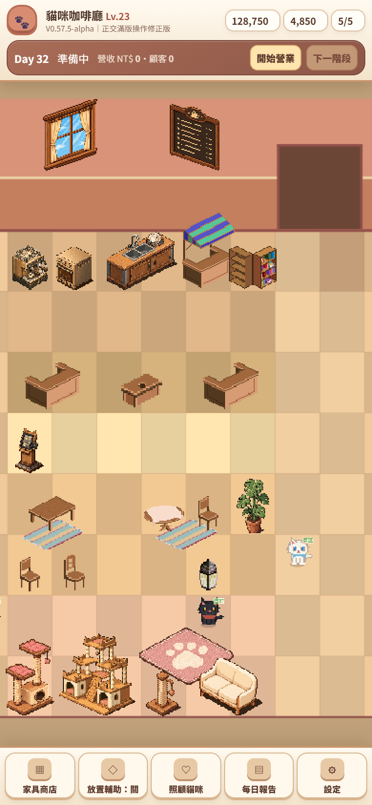
| 視窗 | 首屏 zoom | 上下留白 V0574→V0575 | X pan range(zoom-in 1.35) | Y pan range |
|---|---|---|---|---|
| 390×844 | 0.531 | ~44px → 18px | 798px | 983px |
| 393×852 | 0.536 | ~44px → 19px | ~800px | ~985px |
| 430×932 | 0.588 | ~44px → 26px | ~880px | ~1080px |
門固定 x7-8 使 portrait 天生 width-constrained（無法在不裁門下 100% 填滿高度）；本版以縮牆浪費、加高有家具的背牆、去情境列保留浪費，把留白降到 ~18px，並保留 zoom-out 看整房、zoom-in pan 探索。每張指標見 evidence/v0575/metrics.json。
2. P0：Zoom-in 後四向平移（拖曳改變 scrollX/Y）
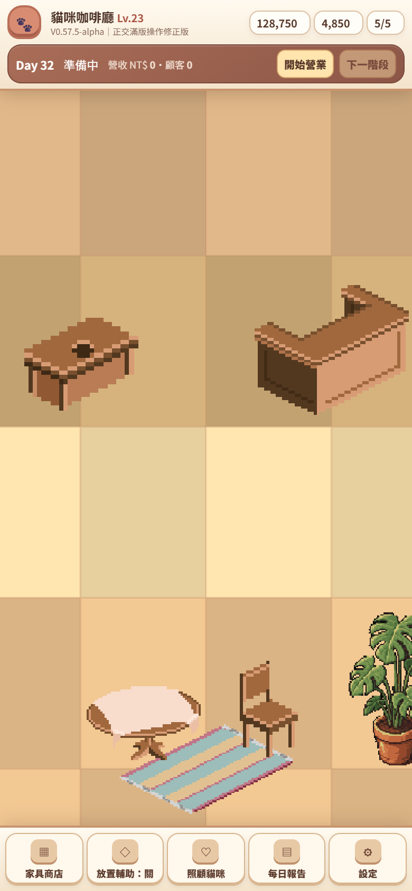
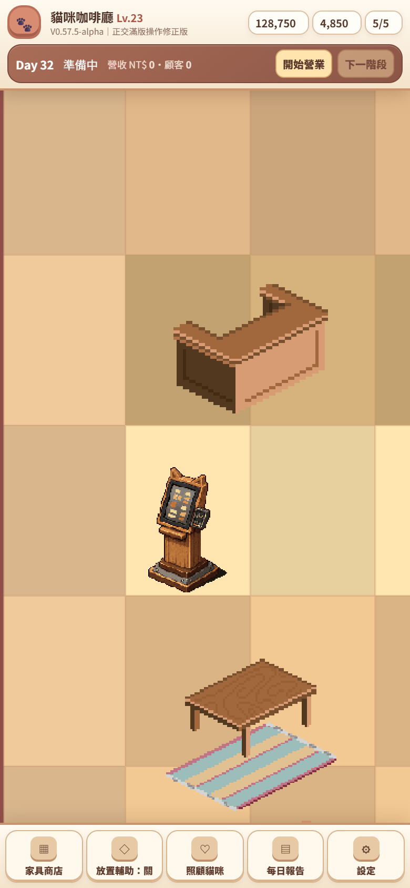
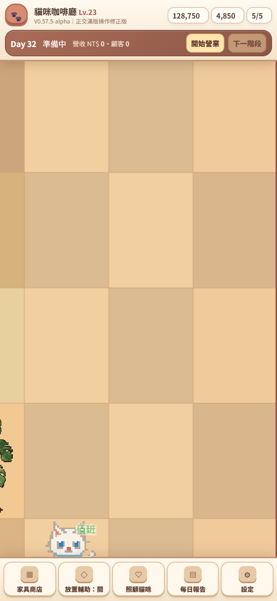
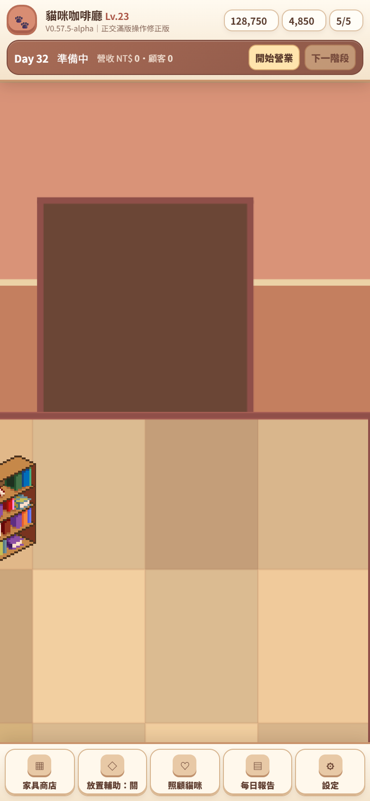
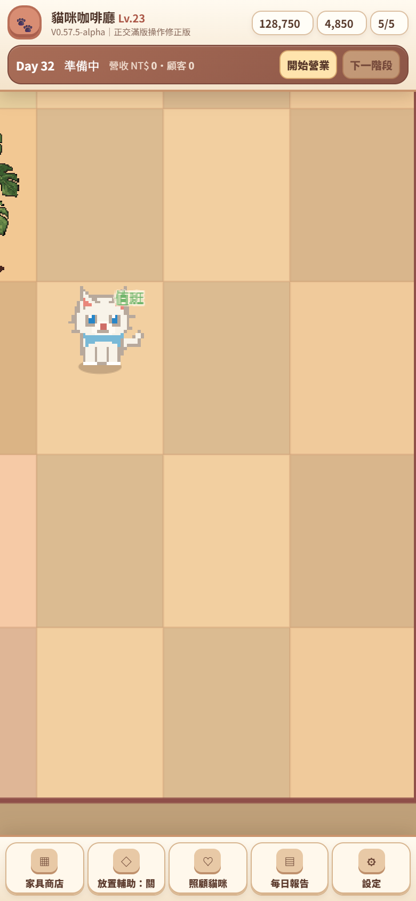
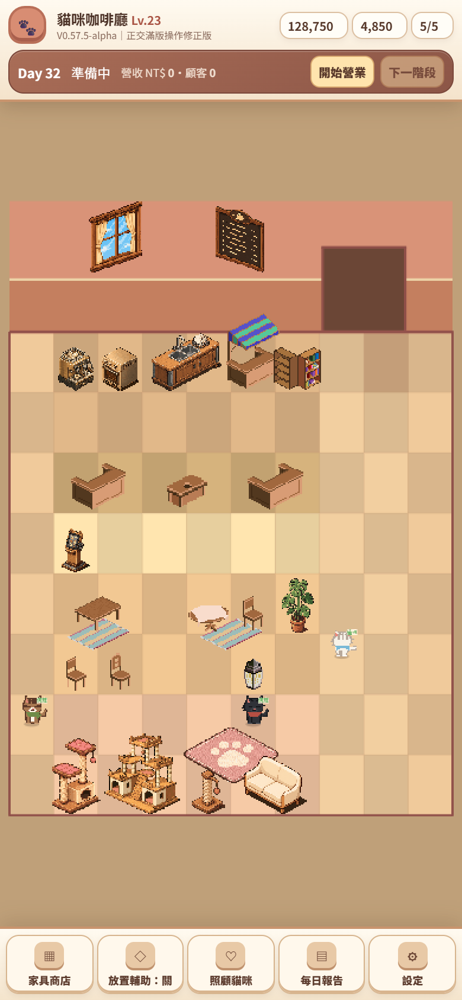
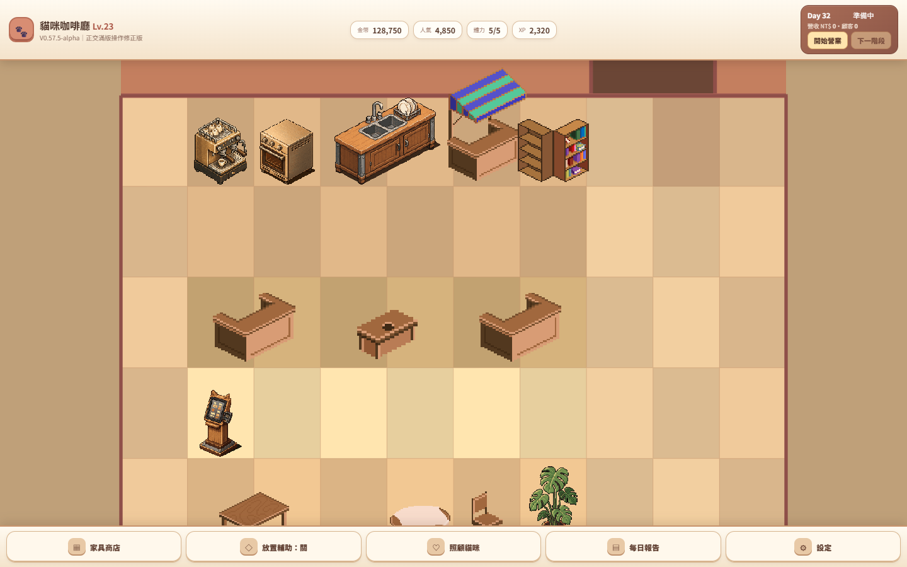
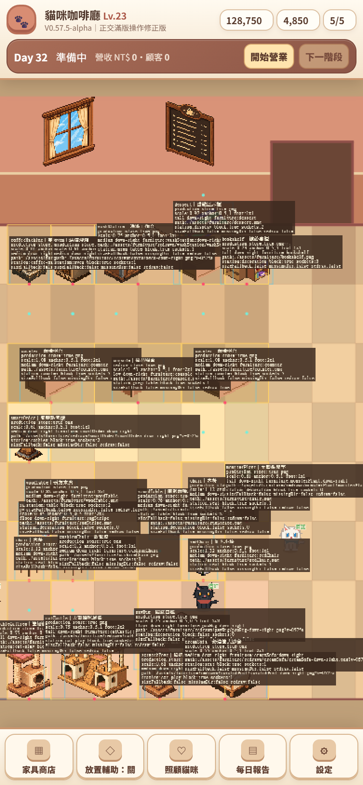
根因：互動平移直接位移 scrollX/Y，但 clamp 以只在 preRender 更新的 camera.midPoint 重算中心再 centerOn 回去 → 把平移量歸零。修正：clamp 改由即時 scrollX + width/2 推導中心（viewCentre()）。左右平移 scrollX 289→880 證明可實際探索。
3. 三種手機寬度 / 真實存檔
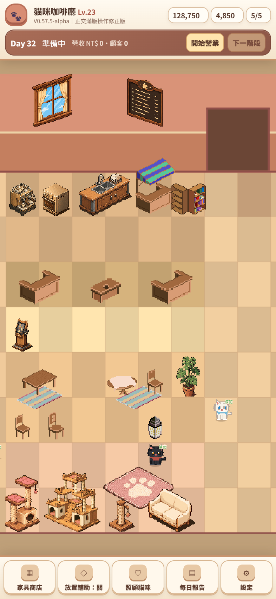
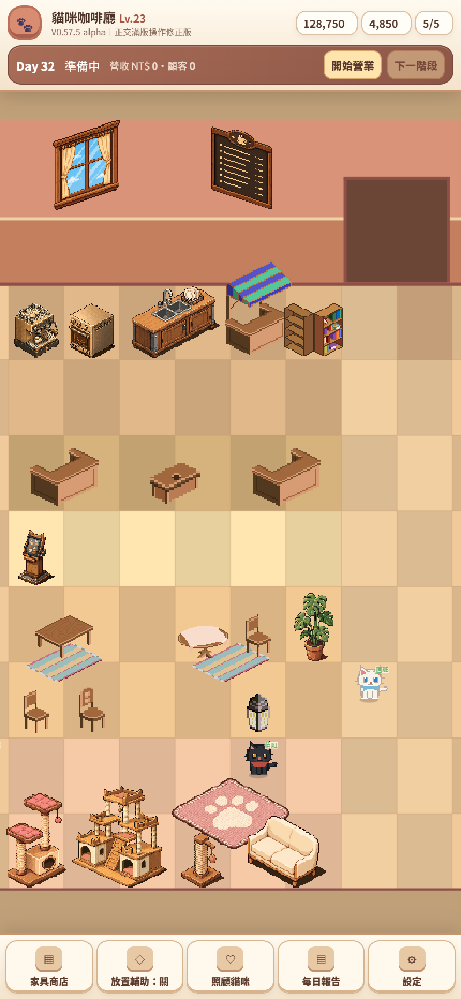
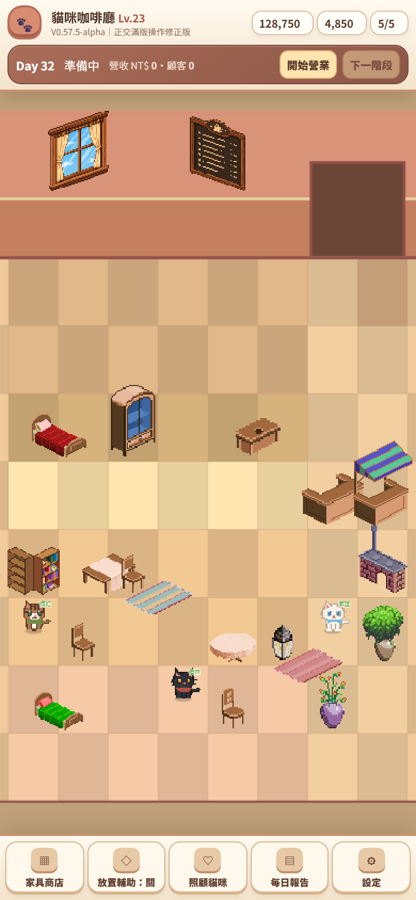
左右外圈 x0/x9 改為中性淺色地板（無不明深色直條）；家具仍為等角 Placeholder（正交透視待 ART-0576）。詳見 V0575 結果。